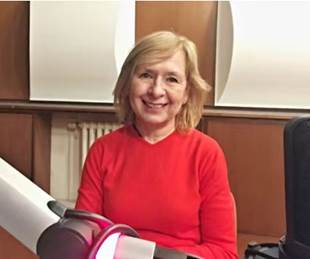

The 2026 Seoul International Conference on Linguistics
Theory Returns: Linguistics in the Age of AI
Conference Description
The Linguistic Society of Korea (LSK) is pleased to announce the 2026 Seoul International Conference on Linguistics (SICOL-2026), to be held on August 10–11, 2026 at Sungshin Women’s University, Seoul, Korea.
Recent advances in artificial intelligence, particularly large language models (LLMs), have transformed how language is processed, modeled, and analyzed. As AI systems increasingly simulate aspects of linguistic competence and performance, fundamental questions concerning the nature of linguistic knowledge, structure, and representation become ever more pressing.
In such a rapidly evolving intellectual landscape, theoretical linguistics assumes renewed importance. Sustained inquiry into the underlying architecture of the human language faculty—its formal properties, constraints, and explanatory principles—is indispensable for understanding both the limits and implications of AI-driven approaches to language.
SICOL-2026 aims to provide a forum for rigorous investigation of the essential properties of human language, encouraging contributions
that engage foundational questions of linguistic theory, formal modeling, and empirical methodology in dialogue with contemporary
developments in AI.
We welcome submissions from all subfields of linguistics, including but not limited to:
- Theoretical linguistics
- Sociolinguistics, psycholinguistics, and neurolinguistics
- Applied linguistics
- Corpus and computational linguistics
- AI and theoretical linguistics
Equal consideration will be given to papers directly addressing the conference theme and to papers from all subfields of linguistics.
Invited Speakers

Jennifer Cole
Professor, Department of Linguistics, Northwestern University
Jennifer Cole is a Professor in the Department of Linguistics at Northwestern University. Her research focuses on the phonology and phonetics of prosody—the intonation and temporal patterns of spoken language—and how prosody encodes sentence structure, communicative intentions, and the dynamics of social interaction. She employs computational and statistical methods to model prosody in experimental and corpus data, with an emphasis on automated analysis of large, multi-talker datasets across diverse languages. She has pioneered the use of crowd-sourced perceptual ratings as a basis for building cross-linguistic models of prosody. Her current work includes collaborative projects on prosody in individuals with autism and neurological speech disorders, as well as the development of open, scalable, data-driven infrastructure for collaborative language science research. For more information, visit her homepage and the Prosody and Speech Dynamics Lab.

Hanjung Lee (이한정)
Professor, Department of English Language and Literature, Sungkyunkwan University
Hanjung Lee is a Professor in the Department of English Language and Literature at Sungkyunkwan University (SKKU) and President-elect of the Linguistic Society of Korea (2025–2026). She received her Ph.D. from Stanford University and specializes in semantics, pragmatics, experimental linguistics, and statistical methods for linguistic research. Her work investigates the dynamics of probabilistic grammar and competing motivations that shape grammatical patterns and language use, with particular attention to phenomena such as differential case marking and argument realization across languages. Her recent monograph, Artificial Intelligence and Linguistic Imagination: A New Paradigm in Linguistic Research (인공지능과 언어과학적 상상력, 2025), proposes a new research methodology that integrates corpus linguistics and large language model (LLM)-based approaches to the study of semantic phenomena. For more information, visit her homepage and the SKKU Language and Cognition Lab.

Hana Filip
Professor of Semantics, Heinrich Heine Universität Düsseldorf
Hana Filip is a Professor of Semantics at Heinrich Heine Universität in Düsseldorf. Her research explores the conceptual foundations of semantics, integrating logical/formal and cognitive traditions. She specializes in aspect, genericity, the mass/count distinction, and the interaction between noun phrase semantics and verbal aspect. She received her Ph.D. in Linguistics from the University of California at Berkeley, and her dissertation, Aspect, Eventuality Types and Noun Phrase Semantics, was published in the Outstanding Dissertations in Linguistics series. Prior to her current role, she held faculty positions at Stanford University, Northwestern University, and the University of Rochester, and worked as a computational linguist at SRI International and ICSI at Berkeley. Her recent research, including the DFG-funded project on the "Individuation of Eventualities and Abstract Things," continues to advance the study of semantic interpretation across diverse languages such as English, German, and various Slavic languages.
Call for Papers
- Theoretical linguistics (phonetics, phonology, morphology, syntax, semantics, pragmatics)
- Sociolinguistics, psycholinguistics, and neurolinguistics
- Applied linguistics
- Corpus and computational linguistics
- AI and theoretical linguistics
- 20-minute oral presentation
- 10 minutes for discussion
Abstracts must be submitted electronically via the official submission system.
The Microsoft CMT service was used for managing the peer-reviewing process for this conference.
This service was provided for free by Microsoft and they bore all expenses, including costs for Azure cloud services as well as for software development and support.
Submission link
- Anonymous abstract (double-blind review)
- Authors should remove all identifying information from the abstract and references.
- Self-citations should be anonymized (e.g., “Author 2024”).
- Maximum 2 pages (A4 or US letter), including references
- 12-point Times New Roman
- 1-inch (2.54 cm) margins on all sides
- PDF format only
Each author may submit:
- One single-authored abstract and one joint abstract, or
- Up to two joint abstracts.
Only electronic submissions via the official system will be considered.
- Abstract submission deadline: May 31, 2026 (AoE)
- Notification of acceptance: by June 20, 2026 (KST)
- Camera-ready abstract submission deadline: by July 5, 2026 (KST)
- Conference dates: August 10–11, 2026 (KST)
Registration
We kindly request that all presenters complete registration by July 20, 2026 (KST).
General participants are encouraged to complete online registration by August 2, 2026 (KST).
On-site registration will also be available during the conference (August 10–11, 2026).
Registration details will be announced.
Registration Fees
Registration fees and categories (Regular / Student / Early / On-site) will be announced.
For International Attendees
- Complete the online registration form.
- Pay the registration fee in person at the registration desk during the conference.
Please note that credit card payment is not available.
For Domestic Attendees
- Complete the online registration form.
- Transfer the registration fee to the following bank account:
Nonghyup Bank (농협은행)
Account Number: 301-0367-5322-21
Account Holder: The Linguistic Society of Korea (예금주: 한국언어학회)
When making the transfer, please specify your name and affiliation (e.g., 홍길동한국대).
All bank transfer fees must be covered by the participant.
Contact & Committee
Contact
All inquiries regarding abstract submission and conference details should be directed to: sicol2026@gmail.com
Organizing Committee
- Yoon, Tae-Jin (Organizing Committee Chair)
- [Additional members to be listed]
Program Committee
- Jang, Hayeun (Program Committee Chair)
- [Additional members to be listed]